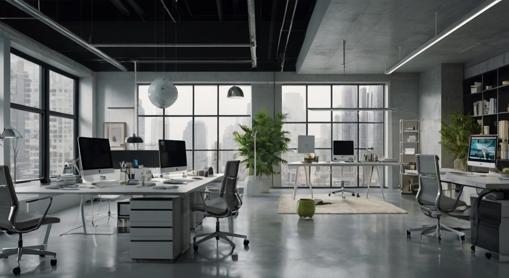

O design vai muito além de simplesmente criar algo bonito. Um designer excepcional é aquele que possui uma combinação de habilidades técnicas, criatividade, empatia e visão estratégica para resolver problemas de forma eficaz e inovadora. Em um mercado cada vez mais competitivo, essas qualidades são essenciais para se destacar e conquistar o sucesso profissional.
Entre as principais qualidades que um designer deve ter, estão a capacidade de se comunicar de forma clara, ser flexível diante de mudanças e ter um bom entendimento das necessidades do cliente. Além disso, é fundamental dominar as ferramentas e as tendências mais recentes, bem como estar sempre atualizado com o que há de mais novo na indústria do design.
A criatividade é, sem dúvida, uma das habilidades mais importantes para qualquer designer. Um designer excepcional deve ser capaz de pensar fora da caixa e criar soluções originais que atendam às necessidades do cliente de forma inovadora e funcional. Além disso, é importante estar disposto a explorar novas ideias e experimentar novas abordagens.
Um bom designer sabe que o design não é apenas sobre estética, mas também sobre a experiência do usuário. A empatia é fundamental para entender as necessidades, desejos e frustrações do usuário final. Um designer excepcional deve ser capaz de criar soluções que não apenas atendam às expectativas do cliente, mas que também proporcionem uma experiência agradável e eficiente para o usuário.
Embora a criatividade seja essencial, um designer excepcional também deve dominar as ferramentas e tecnologias mais recentes. Isso inclui o conhecimento de softwares de design, como o Adobe Creative Suite, e habilidades de programação para criar interfaces digitais interativas e responsivas.
Além das habilidades criativas, um designer excepcional deve ser capaz de pensar estrategicamente. Isso significa entender o mercado, as tendências e as necessidades do cliente para criar designs que não apenas sejam bonitos, mas que também contribuam para os objetivos de negócios e ajudem a construir a identidade da marca.
O design não é um trabalho solitário. Designers excepcionais sabem como trabalhar bem em equipe, comunicar suas ideias claramente e ouvir as opiniões de outros membros da equipe. A colaboração com desenvolvedores, profissionais de marketing e outros stakeholders é essencial para garantir que o design seja eficaz e atenda às expectativas do cliente.
Ser um designer excepcional exige mais do que apenas um conjunto de habilidades técnicas. É preciso ter uma paixão pelo design, ser resiliente e sempre buscar evoluir. Ao combinar criatividade, empatia, visão estratégica e habilidades técnicas, você pode se destacar no mercado competitivo e transformar ideias em soluções incríveis.